Des leçons guidées. L’app t’écoute au micro pendant que tu joues.
Défile
Handpan Constellation Studio · la musique devient visible
Ton handpan sait des choses que tu ne sais pas encore.
Fais-lui écouter quelques notes : l’app reconnaît sa gamme et allume ses accords. Ce soir, tu joues une chanson et tu chantes dessus. Les jours suivants, tu t’entraînes avec elle.
Découvrir mon handpan gratuitement
Gratuit pour toujours, sans carte bancaire.
74 coques connues, 541 ateliers recensés : ton handpan est sans doute déjà dedans.
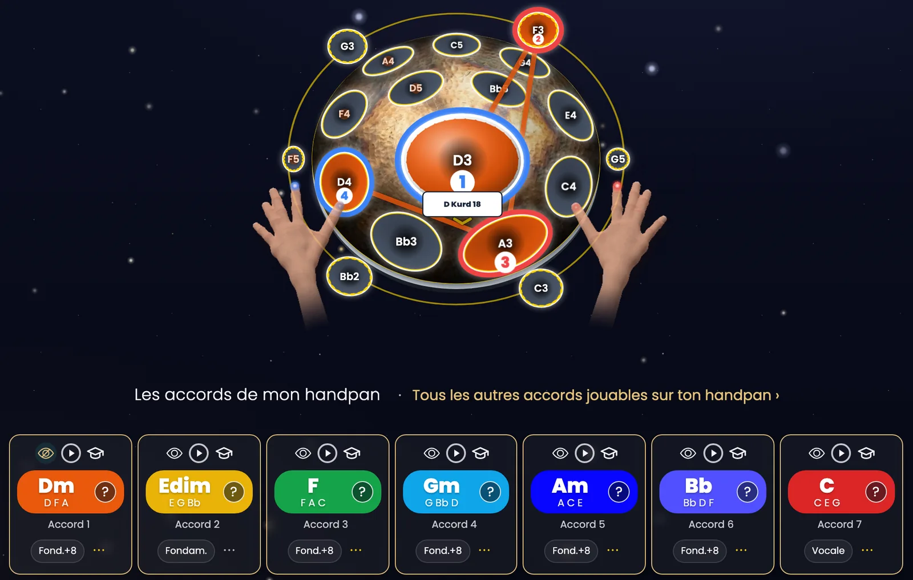
Le piano a la partition.
La guitare a la tablature.
Le handpan avait des chiffres et des lettres.
Il lui manquait de voir la musique : sept couleurs, et des accords qui se dessinent comme des constellations.
Trois gestes
De ton instrument à ta première chanson.
1
Fais-lui écouter ton handpan.
Tu ne connais pas le nom de ta gamme ? Aucune importance. Tu joues quelques notes au micro, l’app la reconnaît et retrouve ton instrument.
2
Regarde-le s’allumer.
Chaque degré prend sa couleur, chaque accord dessine sa figure : les sept accords que ton handpan sait jouer, et l’émotion de chacun.
3
Joue ce soir.
Les chansons du catalogue que ton handpan peut jouer sont déjà là. Tu en as une autre en tête ? Colle ses accords et ses paroles, ou dépose le fichier : l’app te la montre sur TON handpan.
Tout ça, c’est gratuit.
Sans carte bancaire, sans limite de temps, sur ton propre handpan.
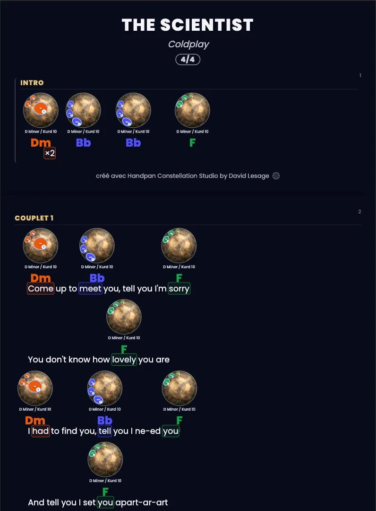
Une chanson, pour de vrai
Les accords au-dessus des paroles, dessinés sur ton handpan.
Comme une grille de guitare, sauf que tu ne lis pas de noms d’accords : tu suis des formes et des couleurs. Le rouge revient, c’est la maison. Le bleu, c’est la tension qui appelle le retour.
Les paroles devant toi, les accords au-dessus, sur ta gamme : tu joues, et tu chantes. Ce soir.
Sur un D Kurd 18, 157 chansons du catalogue se jouent déjà telles quelles.
Chanter
Une app créée par un chanteur qui s’accompagne au handpan.
Le handpan peut porter une voix, comme la guitare ou le piano. Commence par la tienne : tu chantes quelques notes, l’app trouve ta tessiture et te dit quel handpan lui va.
Ta tessiture, mesuréeLe handpan fait pour ta voixUne note guide et un bourdon
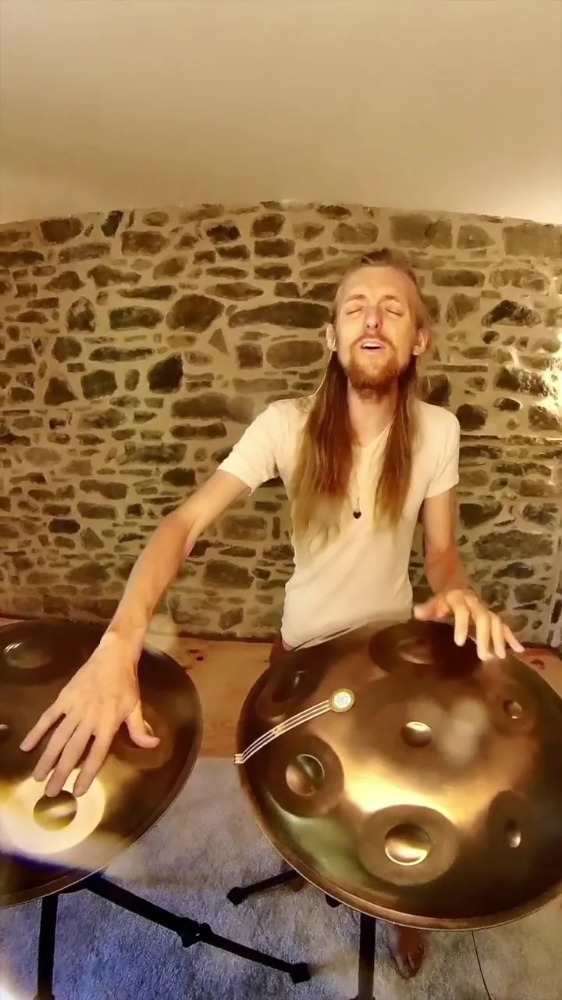
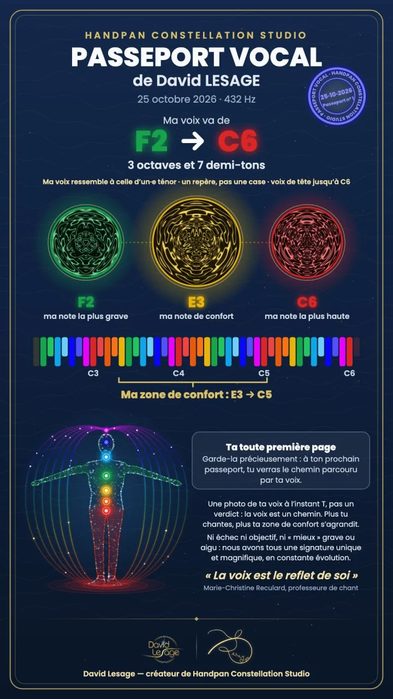
Le passeport vocal
Quel handpan est fait pour ta voix ?
Tu chantes quelques notes, l’app trouve les bornes de ta voix, ta zone de confort, et la tonalité de handpan qui lui va.
Un passeport par personne : toute la famille peut avoir le sien, et un professeur en crée pour ses élèves.
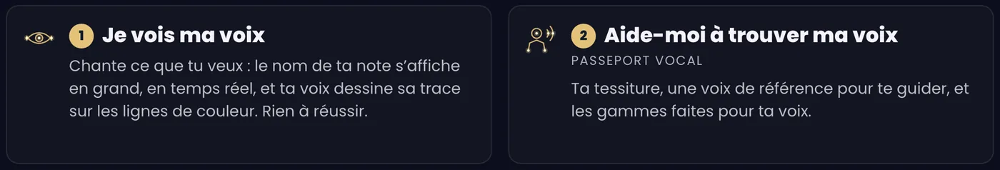
S’entraîner
Chaque jour, l’app joue avec toi.
Connaître son handpan, c’est le début. Le faire sonner, c’est la pratique. Tout ce qu’il faut pour t’y mettre est dans le compte gratuit.
Le tapis roulant fait défiler les enchaînements, à ton rythme, sans tempo imposé.
Un métronome ou un batteur. L’app te dit si tu es en avance ou en retard.
Un moment de pratique à toi, et ta progression, jour après jour.
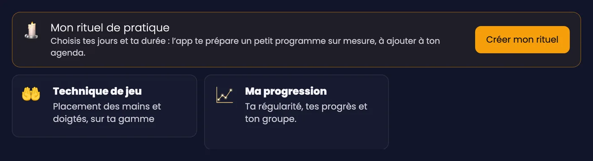
Le langage
Lire la musique sans la déchiffrer.
Plutôt que des noms de notes, l’app te montre la structure de la musique : des couleurs, et des formes.
Sept couleurs, et c’est toi qui choisis ce qu’elles disent.
Les ChromaKeys, le piano de couleurs de l’app, colorent ton handpan. La couleur dit la note elle-même, ou sa place dans la gamme.
La couleur dit…
Les notes s’écrivent…
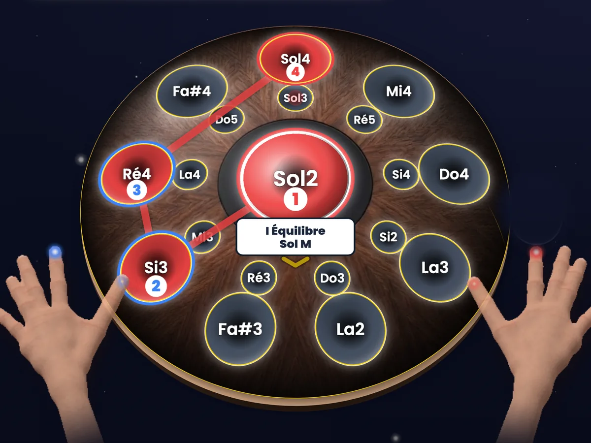
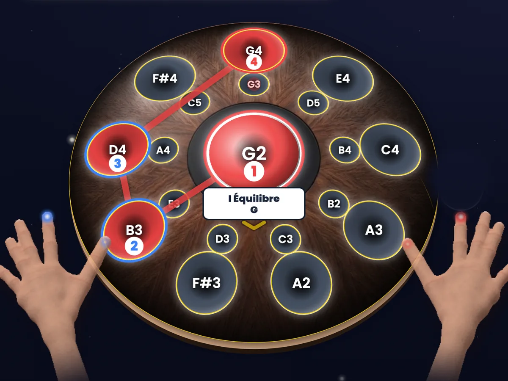
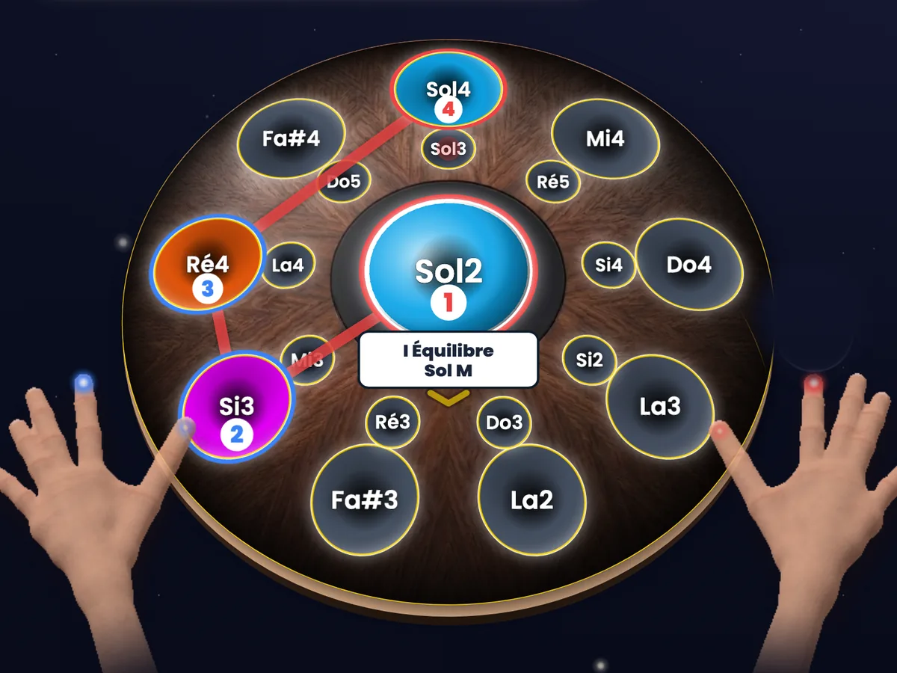
Toutes les notes de l’accord prennent la couleur de son degré, et le premier degré est toujours rouge : en Sol majeur, c’est l’accord de Sol, en Do majeur celui de Do. La forme de l’accord ne bouge pas d’une tonalité à l’autre : c’est le capodastre de la guitare.
Chaque note garde la couleur de son chakra, quelle que soit la gamme : Do est toujours rouge, Sol bleu ciel. Un accord devient alors un mélange, une couleur par note.
Jouer un enchaînement, c’est raconter une histoire : quitter la maison, partir à l’aventure, traverser une tension, puis revenir.
Le langage des constellations
La nouvelle tablature visuelle du handpan.
Au-delà des couleurs, l’app relie les notes d’un accord : elle dessine une figure lumineuse, une constellation d’accord. Trois façons de la tracer.
Ton handpan…
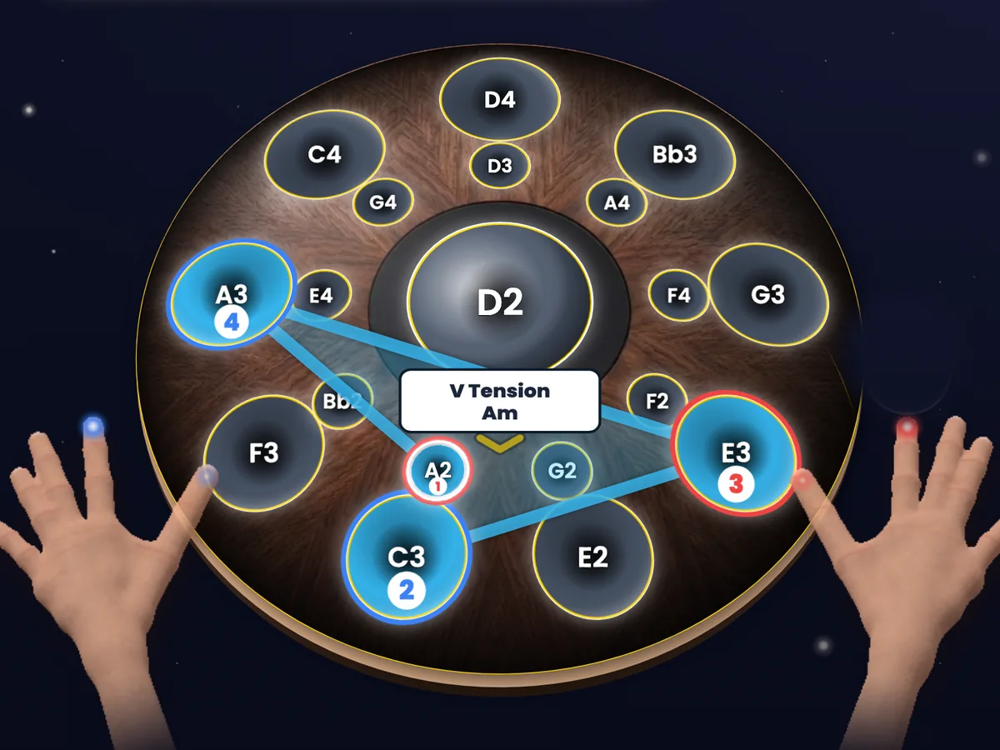
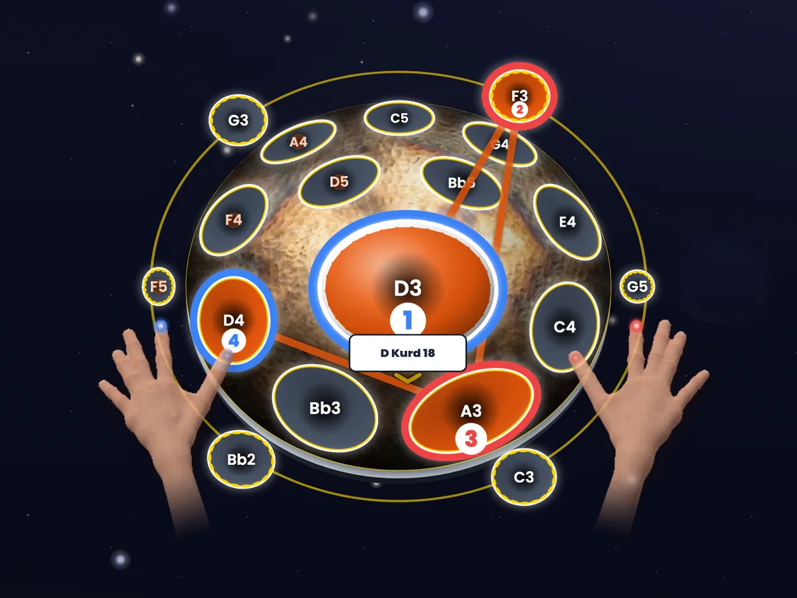
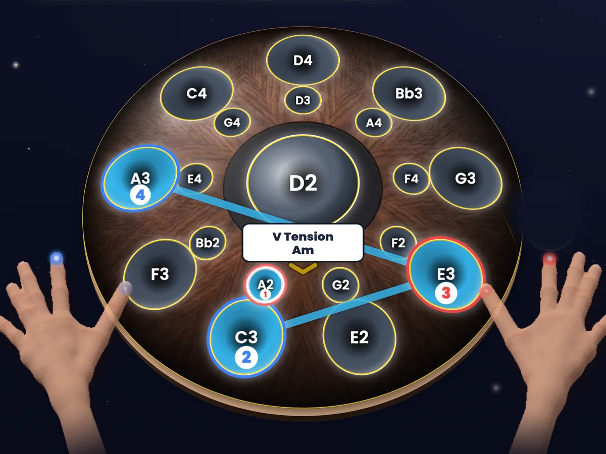
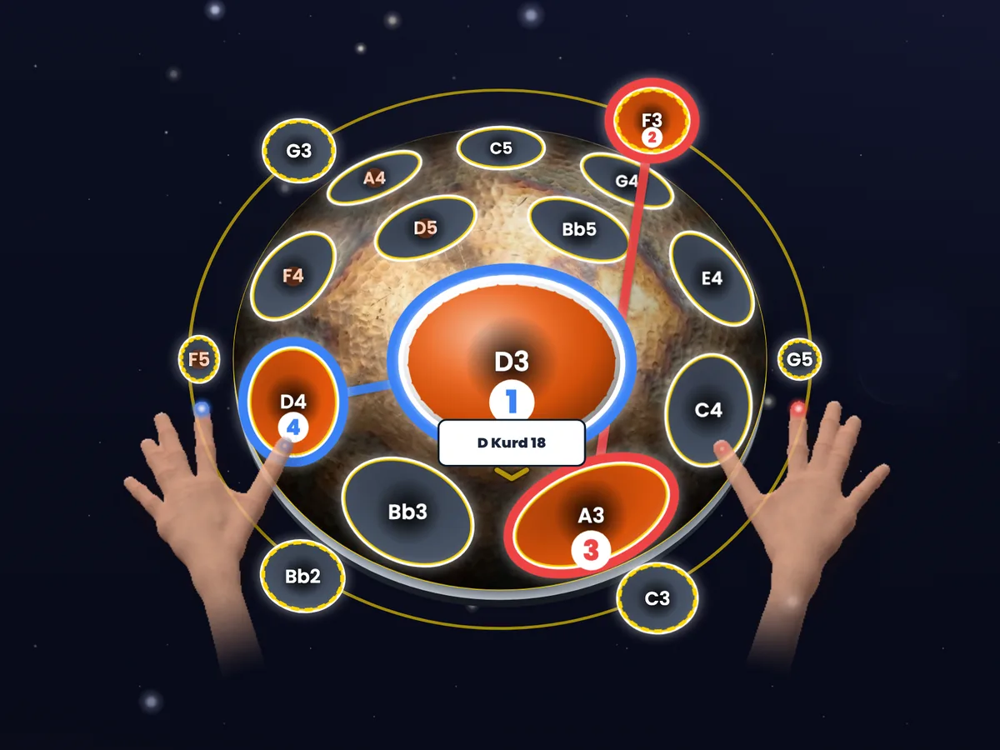
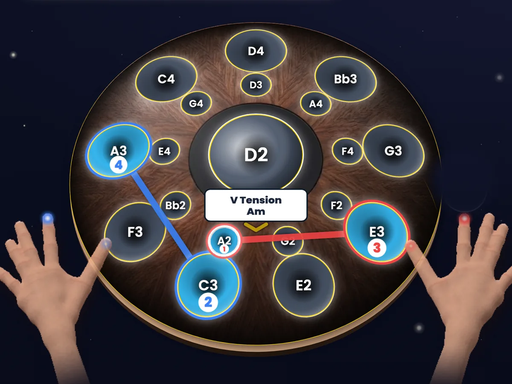
Le même accord dans les trois tracés, sur un handpan acoustique D Kurd 18.Le même accord, V Tension, dans les trois tracés, sur un Neotone.
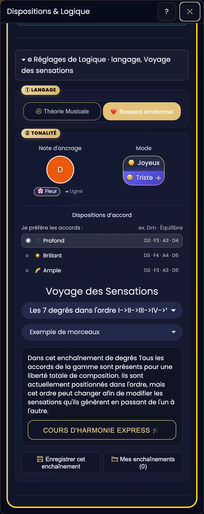
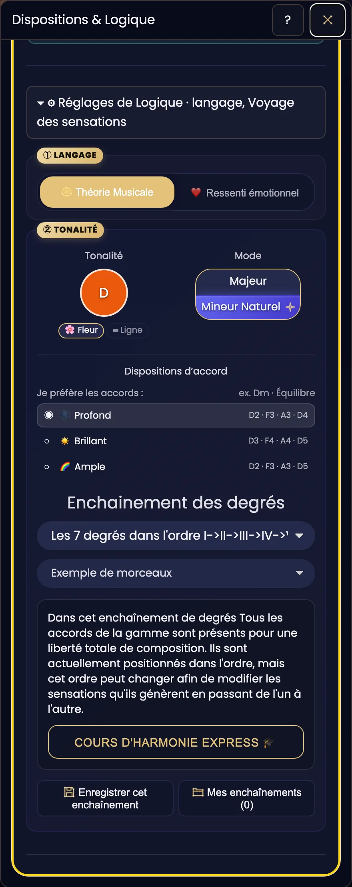
Le mode Logique
Deux langages pour la même musique.
En ressenti, une gamme est joyeuse ou triste, et sa tristesse peut être profonde, orientale ou jazz. Tu composes un voyage de sensations.
En théorie, les mêmes réglages reprennent leurs noms : majeur, mineur naturel, harmonique, mélodique, enchaînement des degrés.
Tu entres par l’émotion. Le jour où tu veux le solfège, il est là, au même endroit.
Tu commences sans solfège. Les noms viennent quand tu les demandes.
Découverte
Les couleurs et les numéros, sans solfège.
Apprenti
Les noms des notes et des accords.
Musicien
Tout débloqué : les 7 accords, les enrichissements +7, +9…
Ce qu’en dit une élève
Plus je l’utilise, plus je réalise à quel point elle porte bien son nom. Elle nous ouvre véritablement le champ de tous les possibles !
« Ayant déjà utilisé une autre application, je peux dire que celle-ci est de loin ma préférée tant elle est complète ! […] De quoi apprendre, expérimenter et progresser en autonomie ! »
Lire tout son message
« J’ai fait mes premiers pas au handpan avec David et je poursuis aujourd’hui mon apprentissage avec Constellations. Ayant déjà utilisé une autre application, je peux dire que celle-ci est de loin ma préférée tant elle est complète !
Plus je l’utilise, plus je réalise à quel point elle porte bien son nom. Elle nous ouvre véritablement le champ de tous les possibles !
Ce que j’apprécie particulièrement, c’est qu’elle va bien au-delà des cours en ligne. Les outils interactifs permettent d’afficher son propre handpan à l’écran, de recevoir un retour immédiat sur les notes jouées, de choisir un tempo ou encore de jouer avec un accompagnement à la batterie. On explore également le rythme, le chant, l’expression des émotions et une multitude de gammes. De quoi apprendre, expérimenter et progresser en autonomie !
La plateforme évolue aussi régulièrement grâce aux idées et aux besoins de ses utilisateurs, et chaque amélioration profite à tous.
Et puis, il y a David ! Un professeur passionné, bienveillant et à l’écoute, qui sait adapter son enseignement à chacun. Il m’a notamment proposé différentes approches pour travailler mes difficultés avec le rythme et m’a accompagnée dans l’utilisation de mon handpan électronique avec l’application.
Une plateforme que je recommande sans hésitation, aussi bien aux débutants qu’aux musiciens confirmés et professionnels souhaitant enrichir leur pratique et explorer de nouvelles possibilités musicales ! »
Marina Fortuna · élève de David, handpan électronique
Pourquoi pas autre chose ?
Une étoile seule, on la trouve ailleurs.
La constellation, non.
te montre quelqu’un jouer sur son handpan. L’app part du tien.
est écrite pour une gamme. L’app te montre ce que la tienne peut jouer.
te guide une heure par semaine. L’app t’accompagne les autres jours, sur ton instrument.
accorde, bat la mesure ou fait chanter juste. Ici, tout est relié autour d’un seul instrument, le tien.
Gratuit, pour toujours
Tout ça, sans carte bancaire.
- Reconnaître ta gamme au micro
- Tous les accords de ton instrument, en couleurs et en constellations
- Les chansons que ton handpan peut jouer ce soir
- Coller les accords et les paroles d’une chanson : l’app te la montre sur ton handpan
- Trouver ta voix : ta tessiture, une note guide, un bourdon
- T’entraîner : technique, accords, rythme, ton rituel
- Tout ce que tu crées est sauvegardé
- Savoir quel handpan choisir ensuite
Le jour où une chanson ne tombe pas sur ta gamme, Essentiel la transpose. Le jour où tu veux être guidé en chantant, c’est Studio. Les deux t’attendent dans l’app.
Le mouvement
Tu ne télécharges pas une app.
Tu rejoins une constellation.
541ateliers de fabrication recensés sur la carte
7langues, et un lexique que les joueurs écrivent ensemble
1étoile à ton nom, sur la carte des joueurs
En évolution permanente
De nouvelles fonctions, gammes et modes arrivent régulièrement, et ils sont inclus. L’app d’aujourd’hui sera plus riche demain.
Ton retour façonne l’app
Depuis l’application, tu envoies tes idées en un clic. Chaque message est lu et oriente la suite.
Une communauté, pas un catalogue
Ensemble, on construit l’outil qu’on aurait tous rêvé d’avoir, enfant.
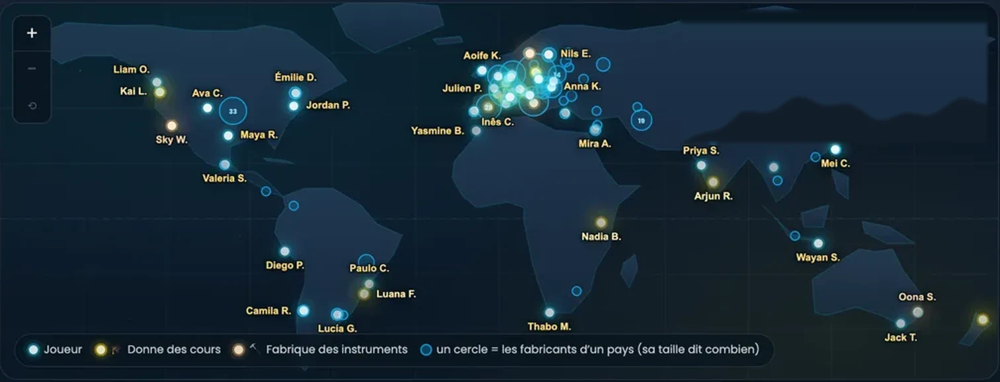
Carte de démonstration, noms fictifs.
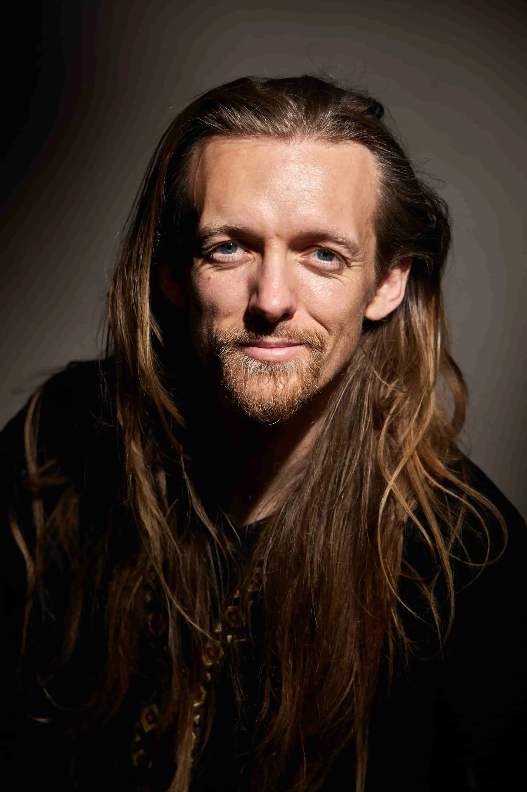
Pourquoi cette app
« L’outil que j’aurais rêvé qu’on m’enseigne, enfant »
J’ai commencé la batterie à 4 ans, et le solfège m’a coupé de mon envie de jouer : j’ai appris à l’oreille. À 12 ans, au piano, j’ai compris que ma mémoire n’était pas faite pour décoder des notes abstraites : elle est visuo-motrice et spatiale. Avec le handpan, j’ai retrouvé le même mur : trois handpans fabriqués en 2018 pour former un « piano de handpans », deux Yishama sur mesure en 2021, deux vaisseaux spatiaux sans notice de pilotage, puis le Neotone, premier handpan électronique dont je suis devenu bêta-testeur puis ambassadeur, où les notes changent de place à chaque gamme. De ces dessins est né l’outil interactif que j’aurais rêvé qu’on me donne : révéler la complexité de la théorie musicale par une expérience visuelle et auditive directe, dans des langages qu’un enfant peut comprendre.
Questions
Ce qu’on me demande.
Faut-il un pan numérique ?
Non. L’app est pensée d’abord pour ton handpan acoustique, quel qu’il soit. Si tu as un pan numérique, tu peux aussi le relier.
Qu’est-ce qui est vraiment gratuit ?
Tout ce qui sert à connaître ton instrument et à jouer : ta gamme, tes accords, le répertoire, le chant pour trouver ta voix, la technique de jeu, la sauvegarde de ce que tu crées.
Et si je ne connais pas ma gamme ?
Tu la fais écouter au micro, l’app la retrouve.
Je n’ai jamais fait de solfège. C’est pour moi ?
Oui. Tu commences par les couleurs et les émotions. Les noms des notes et la théorie viennent quand tu les demandes.
On va me demander ma carte bancaire ?
Non. Le compte gratuit ne demande aucune carte, et il reste gratuit sans limite de temps. Ta carte ne te sera demandée que le jour où tu choisis une formule payante. Et Essentiel commence par 30 jours d’essai.
Comment je commence ?
Tu t’inscris, tu poses ton handpan devant toi et tu le fais écouter à l’app. Elle s’occupe du reste.
Ton handpan t’attend.
Il a des choses à te montrer.
Découvrir mon handpan gratuitement
Gratuit, sans engagement.